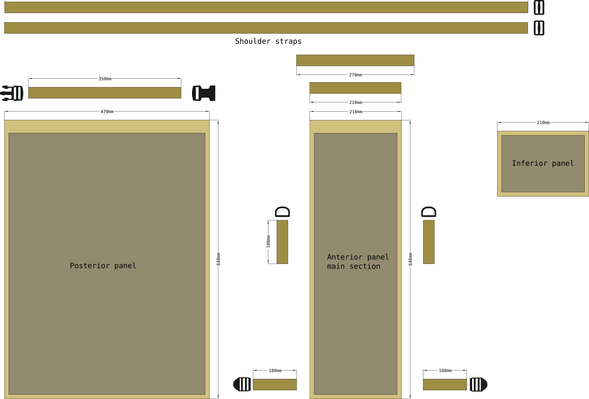
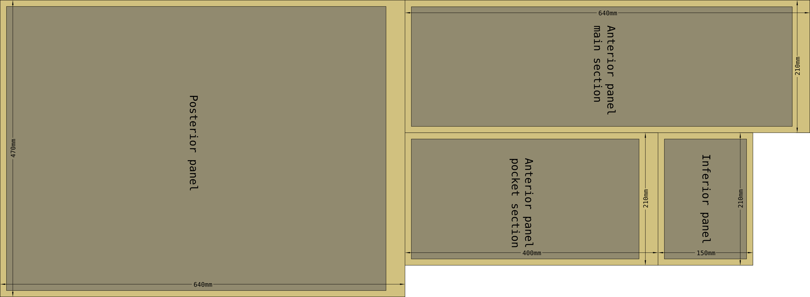
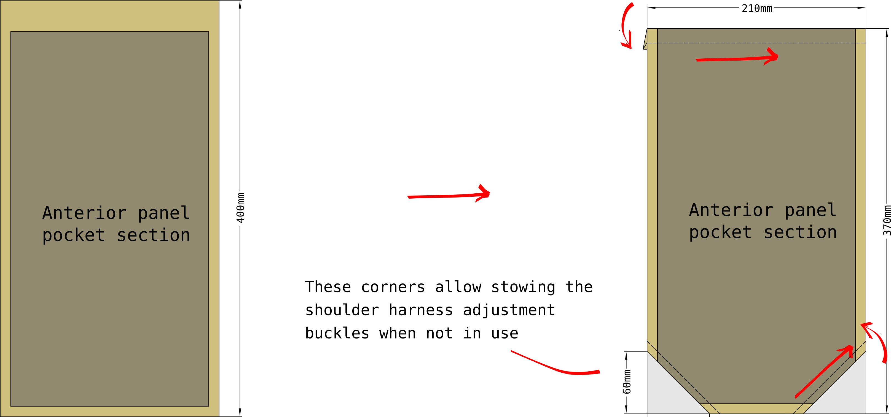
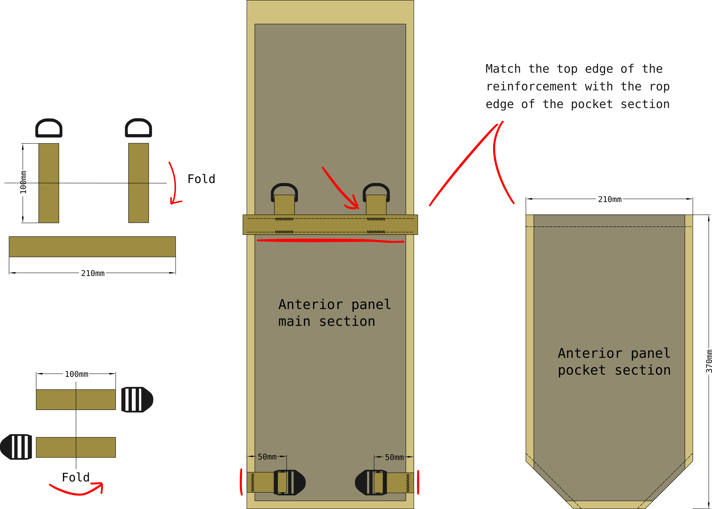
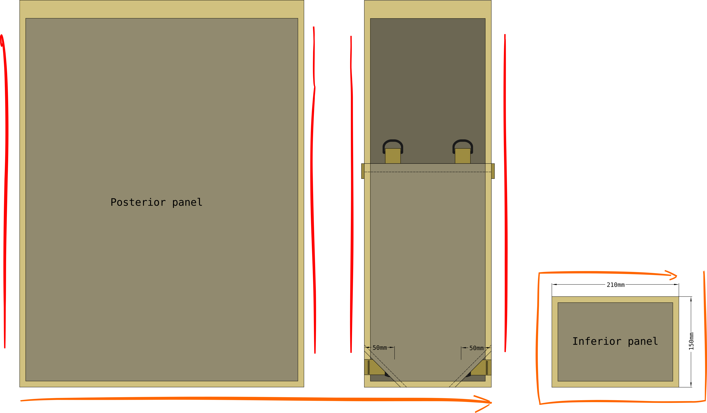
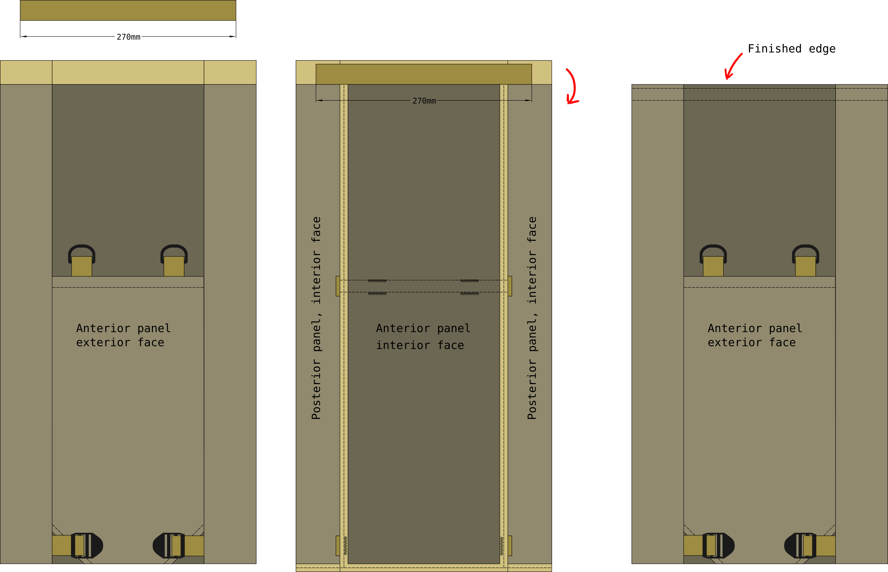
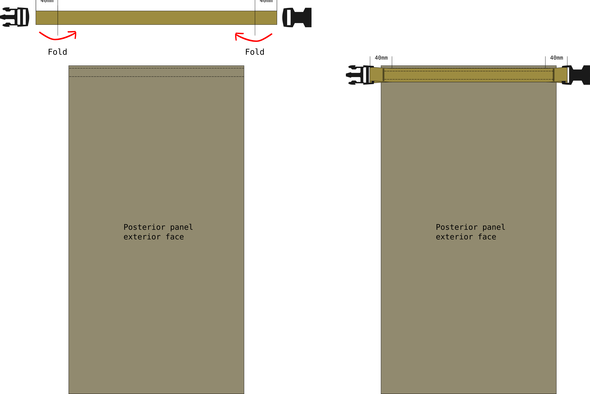
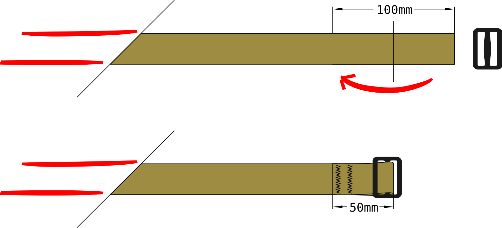
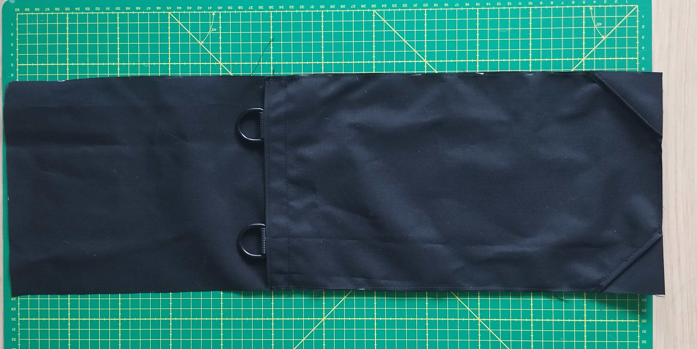

Backpack, small, rolltop#
Essentially a rolltop sack with a couple of buckles so it can be converted into a small backpack by adding a utility pair of utility straps as the shoulder hanrness. Also has an outer pocket that can be used for foam padding to increase carrrying comfort.
This bag is somewhat insipred by Savotta Hatka and Varusteleka’s DP10 daypacks. This version is kept intentionally simple, and does not include features such as PALS webbing of modular attachment points to use the bag a a clamshell or larger packs.

Materials#
Pattern parameters
The pack consists of one main fabric that functions as both the posterior and medial sections of the pack. The anterior panel is made up of two layers: the main section and the pocket section that creates the exterior pocket where the foam pad and carrying harness can be stowed.
Cut#
Suggested cut pattern for 140cm wide fabric rolls
Construction#
Anterior panel pocket section#
Finish the top edge of the pocket section with a folded edge. Fold the seam allowance to the wrong side of the fabric. Similarly finish the bottom corners of the pocket panel by folding off a 6x6cm triangle from each of the corners. The adjustment strap buckles will stow through the holes that the triangles will create.
Anterior panel main section#
Sew on the adjuster buckle and d-ring hardware for the shoulder harness attachment. The adjuster buckles are bar tacked to the seam allowance of the anterior panel main section leave 1cm gap from the adjuster buckle and the seam-line at the bottom of the panel.
Sew int the shoulder harness anchor d-rings and the reiforcement webbing. Depending on your sewing machine, you have two options for this step:
bar tack the d-ring anchors to the fabric, then overlay the reiforcement webbing over it: this works better if your sewing machine struggles with bar tacking through three layers of webbing
bar tack the d-ring anchors and reinforcement webbing at the same time: needs bar tacking through 3 layers of webbing, but leave the bar tack visible and easier to inspect or alter later
Sew a line of straight stiches horizontally across the top and bottom edge of the reinforcement webbing.
Panel assembly#
All three of your panels should be completed now. Next the posterior and anterior panels together along the long edges. Then sew in the inferior panel at the bottom end and complete the roll-rop closure at the top end.
Rolltop closure#
The rolltop closure is made in two steps:
Fold the seam allowance around the entire opening to finish the edge, while simltaneously embedding the rolltop stiffener in the anterior side of the opening.
Once the opening edge is completed, fix the rolltop closure webbing and bucles to the posterior half of the opening. The main rolltop webbing is left on the right side of the posterior panel fully visible.
First finish the edge and embed the stiffener inside the rolled hem:
Sew the rolltop closure onto the exterior face of the posterior half of the opening:
Shoulder harness#
The pack is still missing the shoulder harness. For this, you can use any utility strap or shoulder harness module that can attach to d-rings at the top and terminates in a webbing at the bottom end.
In this version we use a very simple tri-glide utility strap. Simply bar tack a tri-glide bulcke to one end of both shoulder strap webbing sections. The webbing is sewn around the center post of the tri-glide buckle.
 Accessories#
You may consider using Adapter, Cross Bag Compression Strap to attach this type of bag to the exterios of a larger rucksack to use as a daypack.